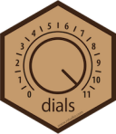
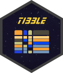
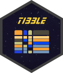

library(tidymodels)
library(probably)
library(desirability2)
tidymodels_prefer()
theme_set(theme_bw())
options(pillar.advice = FALSE, pillar.min_title_chars = Inf)
# check torch:
if (torch::torch_is_installed()) {
library(torch)
}
# Load our example data for this section
"https://raw.githubusercontent.com/tidymodels/" |>
paste0("workshops/main/slides/class_data.RData") |>
url() |>
load()2 - Model optimization by tuning
Getting More Out of Feature Engineering and Tuning for Machine Learning
Startup! 
Where we are 

The brulee package 

Several packages exist for this, but we’ll use the brulee package, which relies on the torch deep learning framework.
Let’s load the package and look at the documentation for the function that we will use:
(HTML docs are nice too)
Notable arguments Part 1 
Model Structure:
hidden_units: the primary way to specify model complexity.activation: the name of the nonlinear function used to connect the predictors to the hidden layer.
Loss Function:
penalty: amount of regularization used to prevent overfitting.mixture: the proportion of L1 and L2 penalties.validation: proportion of data to leave out to assess early stopping.
Notable arguments Part 2 
Optimization:
optimizer: the type of gradient-based optimization.epochs: how many passes through the entire data set (i.e., iterations).stop_iter: number of bad iterations before stopping.learn_rate: how fast does gradient descent move?rate_schedule: should the learning rate change over epochs?batch_size: for stochastic gradient descent.
That’s a lot 😩
Cost-sensitive learning 
One other option: class_weights: amount to upweight the minority class (event) when computing the objective function (cross-entropy).
We have a moderate class imbalance, and we’ll use this argument to deal with it.
This will push the minority class probability estimates to be more accurate/calibrated. Overall the model will be less effective; this assumes the minority class is the class of interest.
A single model 


nnet_ex_spec <-
mlp(hidden_units = 20, penalty = 0.01, learn_rate = 0.005, epochs = 100) |>
set_engine("brulee", class_weights = 3, stop_iter = 10) |>
set_mode("classification")
rec <-
recipe(class ~ ., data = sim_train) |>
step_normalize(all_numeric_predictors())
nnet_ex_wflow <- workflow(rec, nnet_ex_spec)
# Fit on the first fold's 90% analysis set
set.seed(147)
nnet_ex_fit <- fit(nnet_ex_wflow, data = analysis(sim_rs$splits[[1]]))Did it converge? 


Did it work? 


assessment_data <- assessment(sim_rs$splits[[1]])
cls_mtr <- metric_set(brier_class, roc_auc, sensitivity, specificity)
holdout_pred <- augment(nnet_ex_fit, assessment_data)
# Performance metrics
holdout_pred |> cls_mtr(class, estimate = .pred_class, .pred_event)
#> # A tibble: 4 × 3
#> .metric .estimator .estimate
#> <chr> <chr> <dbl>
#> 1 sensitivity binary 0.765
#> 2 specificity binary 0.948
#> 3 brier_class binary 0.0500
#> 4 roc_auc binary 0.958Kind of?
If sensitivity is important, then the model is moderately successful.
Optimizing the neural network 
nnet_spec <-
mlp(hidden_units = tune(), penalty = tune(), learn_rate = tune(),
epochs = 100, activation = tune()) |>
set_engine("brulee", class_weights = tune(), stop_iter = 10) |>
set_mode("classification")
nnet_wflow <- workflow(rec, nnet_spec)
nnet_wflow
#> ══ Workflow ══════════════════════════════════════════════════════════
#> Preprocessor: Recipe
#> Model: mlp()
#>
#> ── Preprocessor ──────────────────────────────────────────────────────
#> 1 Recipe Step
#>
#> • step_normalize()
#>
#> ── Model ─────────────────────────────────────────────────────────────
#> Single Layer Neural Network Model Specification (classification)
#>
#> Main Arguments:
#> hidden_units = tune()
#> penalty = tune()
#> epochs = 100
#> activation = tune()
#> learn_rate = tune()
#>
#> Engine-Specific Arguments:
#> class_weights = tune()
#> stop_iter = 10
#>
#> Computational engine: bruleeGrid search
A small grid of points trying to minimize the error via learning rate:

Grid search
In reality, we would probably sample the space more densely:

Iterative Search
We could start with a few points and search the space:

Different types of grids 

Space-filling designs (SFD) attempt to cover the parameter space without redundant candidates. We recommend these the most, and they are the default.
Extract and update parameters 
nnet_param <-
nnet_param |>
update(class_weights = class_weights(c(1, 50)))
nnet_param
#> Collection of 5 parameters for tuning
#>
#> identifier type object
#> hidden_units hidden_units nparam[+]
#> penalty penalty nparam[+]
#> activation activation dparam[+]
#> learn_rate learn_rate nparam[+]
#> class_weights class_weights nparam[+]
#> Neural network tuning 
✋ maybe don’t run this just yet…
Distributing tasks
When only tuning the model:

Running in parallel
Speed-ups are fairly linear up to the number of physical cores (10 here).

Grid Search 
nnet_res
#> # Tuning results
#> # 10-fold cross-validation using stratification
#> # A tibble: 10 × 5
#> splits id .metrics .notes .predictions
#> <list> <chr> <list> <list> <list>
#> 1 <split [1348/151]> Fold01 <tibble [100 × 9]> <tibble [3 × 4]> <tibble>
#> 2 <split [1349/150]> Fold02 <tibble [100 × 9]> <tibble [1 × 4]> <tibble>
#> 3 <split [1349/150]> Fold03 <tibble [100 × 9]> <tibble [3 × 4]> <tibble>
#> 4 <split [1349/150]> Fold04 <tibble [100 × 9]> <tibble [4 × 4]> <tibble>
#> 5 <split [1349/150]> Fold05 <tibble [100 × 9]> <tibble [2 × 4]> <tibble>
#> 6 <split [1349/150]> Fold06 <tibble [96 × 9]> <tibble [5 × 4]> <tibble>
#> 7 <split [1349/150]> Fold07 <tibble [100 × 9]> <tibble [0 × 4]> <tibble>
#> 8 <split [1349/150]> Fold08 <tibble [100 × 9]> <tibble [3 × 4]> <tibble>
#> 9 <split [1350/149]> Fold09 <tibble [100 × 9]> <tibble [1 × 4]> <tibble>
#> 10 <split [1350/149]> Fold10 <tibble [100 × 9]> <tibble [3 × 4]> <tibble>
#>
#> There were issues with some computations:
#>
#> - Error(s) x1: 'best_epoch' should be an integer
#> - Warning(s) x1: Loss is NaN at epoch 1. Training is stopped.
#> - Warning(s) x1: Loss is NaN at epoch 10. Training is stopped.
#> - Warning(s) x1: Loss is NaN at epoch 11. Training is stopped.
#> - Warning(s) x1: Loss is NaN at epoch 12. Training is stopped.
#> - Warning(s) x2: Loss is NaN at epoch 2. Training is stopped.
#> - Warning(s) x1: Loss is NaN at epoch 4. Training is stopped.
#> - Warning(s) x3: Loss is NaN at epoch 5. Training is stopped.
#> - Warning(s) x2: Loss is NaN at epoch 6. Training is stopped.
#> - Warning(s) x6: Loss is NaN at epoch 7. Training is stopped.
#> - Warning(s) x5: Loss is NaN at epoch 8. Training is stopped.
#> - Warning(s) x1: Loss is NaN at epoch 9. Training is stopped.
#>
#> Run `show_notes(.Last.tune.result)` for more information.Sensitivity/Specificity results

Desirability functions
We create simple functions to translate our variable to [0, 1]; 1.0 is most desirable.

We can combine them with a geometric mean.
However…
more_sens <-
select_best_desirability(
nnet_res,
maximize(sensitivity),
minimize(brier_class),
constrain(specificity, low = 0.8, high = 1.0)
)
nnet_res |>
collect_predictions(
parameters = more_sens
) |>
cal_plot_windowed(
truth = class,
estimate = .pred_event,
window_size = 0.2,
step_size = 0.025,
)
Fitting a workflow 
Let’s say that we want to train the model on the “best” parameter estimates.
We can use a tibble of tuning parameters and splice them into the workflow in place of tune():
nnet_sens_fit |> extract_fit_engine()
#> Multilayer perceptron
#>
#> elu activation,
#> 38 hidden units,
#> 1,256 model parameters
#> 1,499 samples, 30 features, 2 classes
#> class weights event=29.58333, no_event= 1.00000
#> weight decay: 1e-05
#> dropout proportion: 0
#> batch size: 1350
#> learn rate: 0.001
#> validation loss after 68 epochs: 0.145Ordering off of the menu 
If we want to choose from the numerically best for an existing metric, there is a simpler function:
mlp_brier_fit |> extract_fit_engine()
#> Multilayer perceptron
#>
#> elu activation,
#> 36 hidden units,
#> 1,190 model parameters
#> 1,499 samples, 30 features, 2 classes
#> class weights event=3.041667, no_event=1.000000
#> weight decay: 2.610157e-05
#> dropout proportion: 0
#> batch size: 1350
#> learn rate: 0.05623413
#> validation loss after 6 epochs: 0.411Extracting Results  
 

If we want to know about the resampled workflow, we can write a function that can return information from tune_grid().
For example, this one can save the optimization process results: